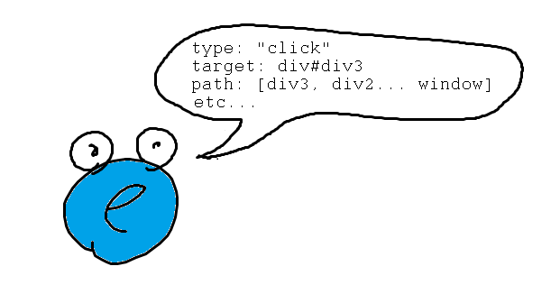

Dom Events
Created by boshka0(aka Boksha Nastya)Event Object
Event Types
Mouse events
- click
- contextmenu
- dbclick
- mouseenter
- mouseleave
- mouseover
- mouseout
- mousedown
- mouseup
Keyboard events
- keydown
- keypress
- keyup
Drag events
- drag
- dragstart
- dragover
- dragenter
- dragleave
- dragend
- drop
Focus events
- focus
- blur
Touch events
- touchstart
- touchmove
- touchend
- touchcancel
Useful link
Finger language by Anna SeleznevaEvent Handling Models
- inline
- traditional
- W3C
Inline Event Handling Model
Click me
Click me
<h3 onclick = "alert('Hello World!')">Click me</h3>
Click me
<script>
function sayHelloWorld() {
alert('Hello World!');
}
</script>
<h3 onclick = "sayHelloWorld()">Click me</h3>
Click me
<script>
function sayHelloWorld() {
alert('Hello World!');
event.target.removeAttribute('onclick');
}
</script>
<h3 onclick="sayHelloWorld()">Click me</h3>
'Traditional' Event Handling Model
element.on+eventType = eventHandler;
Click me
<h3 class="some-class">Click me</h3>
<script>
const someClass = document.querySelector('.some-class');
someClass.onclick = (e) => {
alert(e.type);
}
</script>
Click me
<h3 class="another-class">Click me</h3>
<script>
const anotherClass = document.querySelector('.another-class');
anotherClass.onclick = (e) => {
alert(e.type);
anotherClass.onclick = null;
}
</script>
Feel the difference
button.onclick = sayThanks;
<input type="button" id="button" onclick="sayThanks()">
button.onclick = function() {
sayThanks();
}
W3C Event Handling Model
element.addEventListener(eventName, eventHandler, useCapture);
Click me
<h3 id="some-id">Click me</h3>
<script>
const someId = document.querySelector('#some-id');
function sayHelloWorld() {
alert('Hello World');
}
someId.addEventListener('click', sayHelloWorld);
</script>
Click me
<h3 id="another-id">Click me</h3>
<script>
const anotherId = document.querySelector('#another-id');
function sayHelloWorld() {
alert('Hello World');
anotherId.removeEventListener('click', sayHelloWorld);
}
anotherId.addEventListener('click', sayHelloWorld);
</script>
Common Mistake
Click me
Click me
Event object's properties
- type
- target
- currentTarget
- bubbles
- eventPhase
Event object's methods
- composedPath()
- preventDefault()
- stopPropagation()
Capturing & bubbling
Capture phase
Target phase
Bubble phase